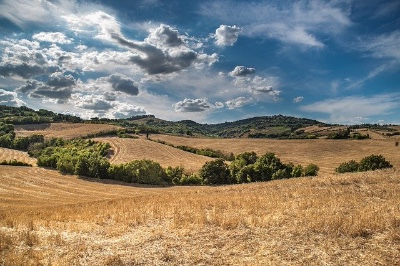
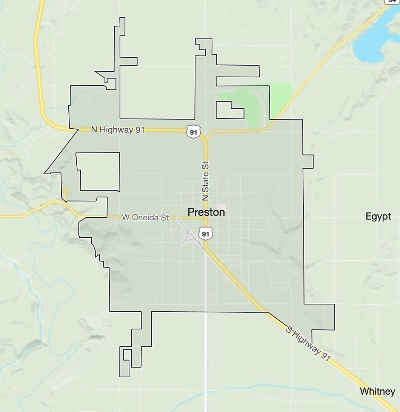

Lynn Forecast
Weather right!
☰
Home
Preston
Soda Springs
Fish Haven
Storm Center
Gallery
A foggy day

Beautiful summer hill
Northern Lake
Midnight lightning
A noon-day rainbow
Storm brewing in the distance
Sunbeams on a summer day
Evening sunset
Tornado season's peak
Contact Information
📧 Contact@LynnWeather.com
📞 (801)234-9876
